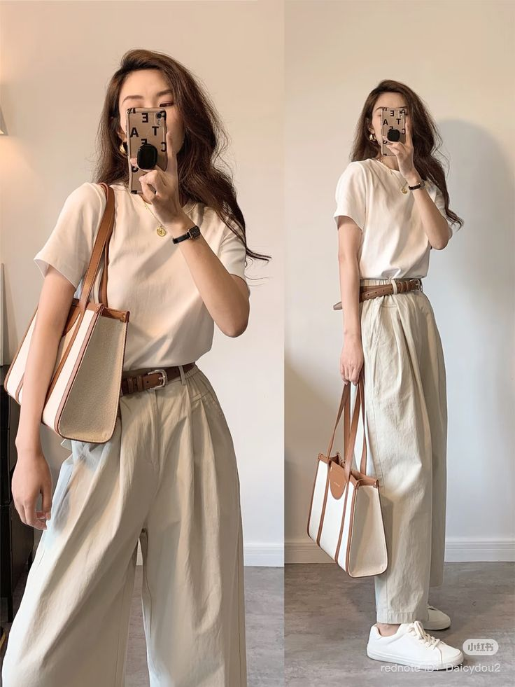
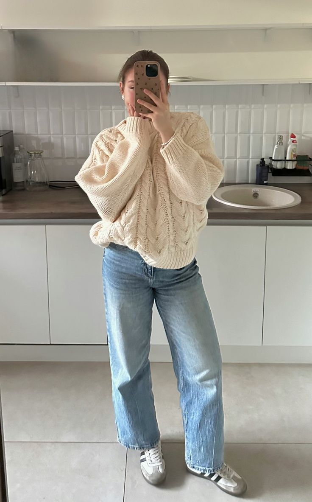
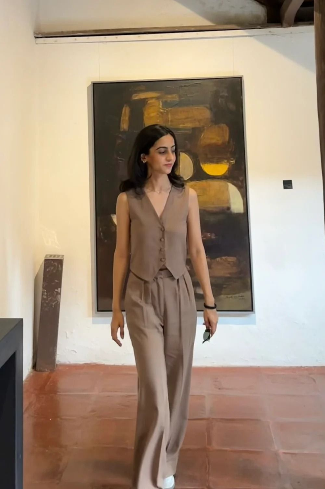
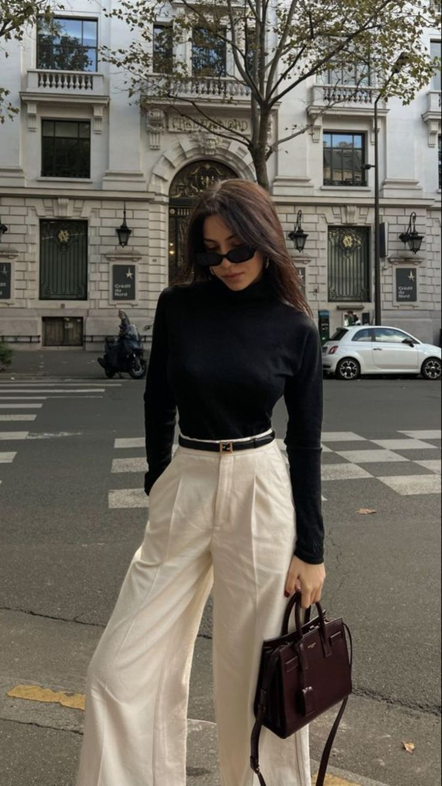
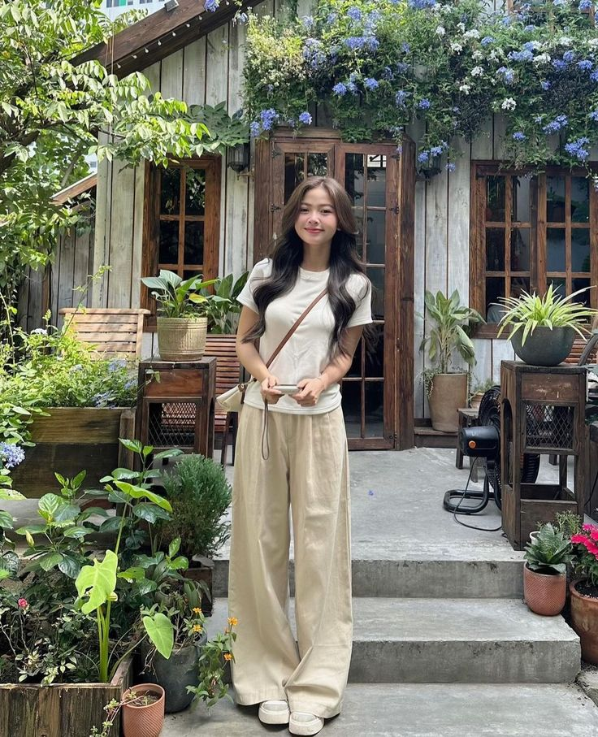
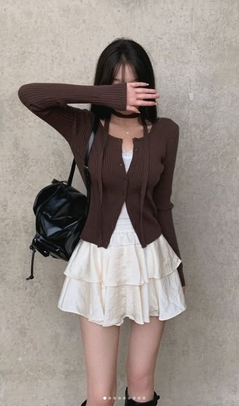
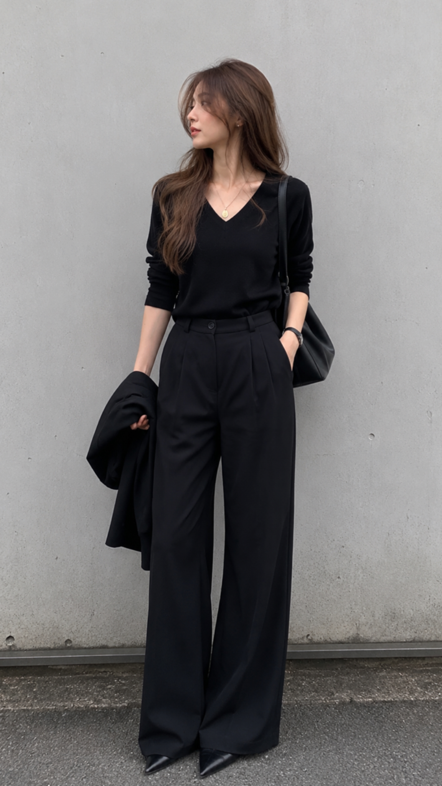
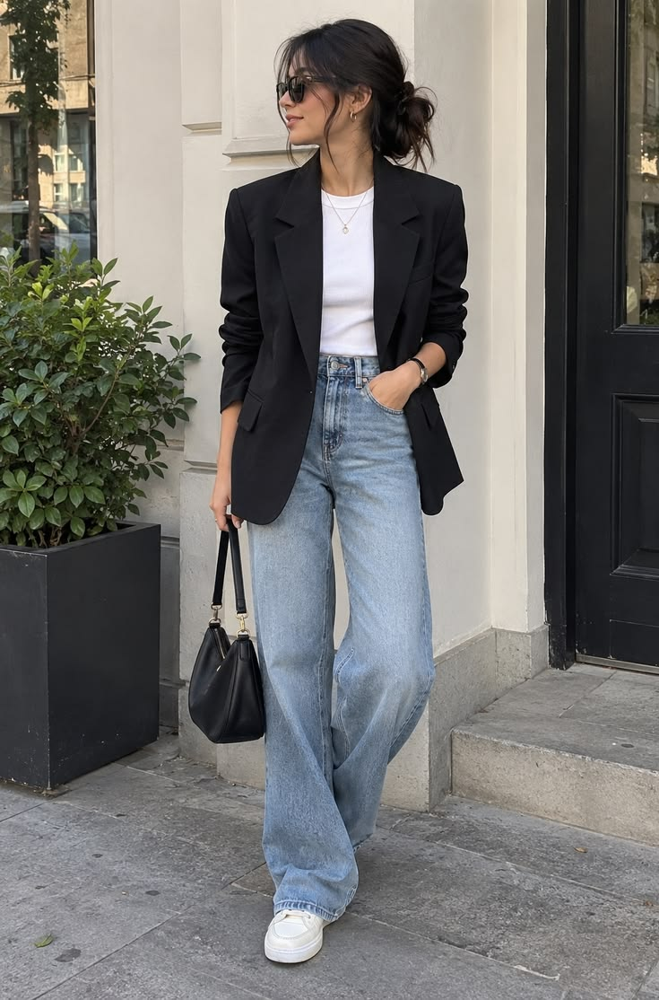
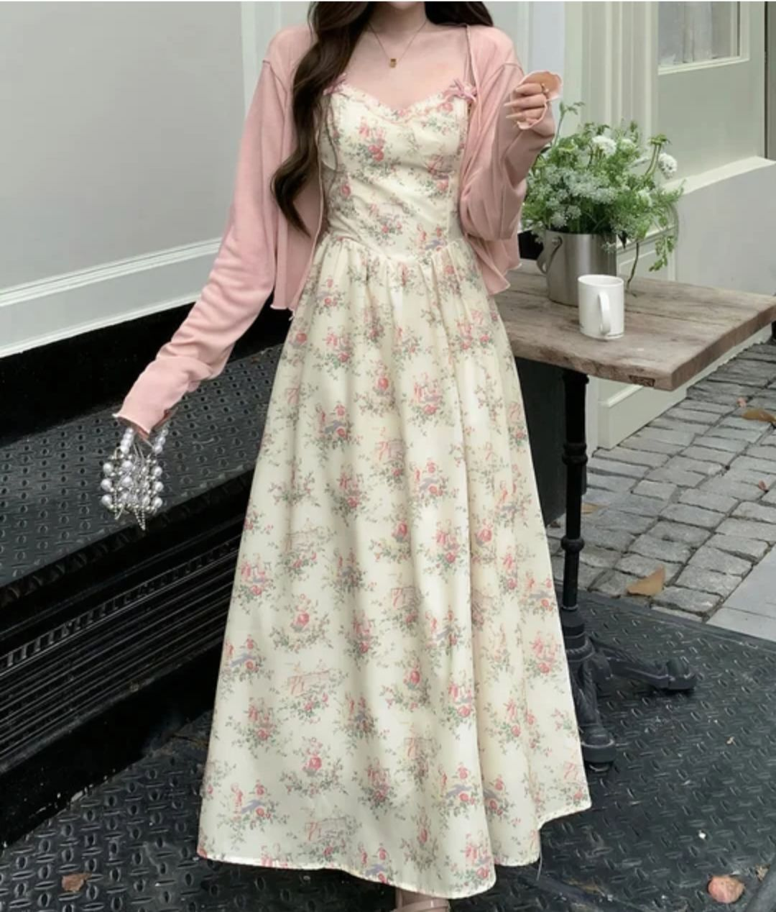
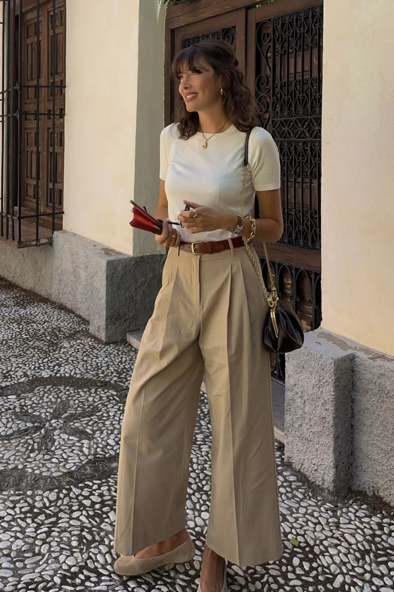

Neutral outfits are a great starting point if you love a minimalist, elegant, or capsule-wardrobe aesthetic. Shades like cream, white, beige, taupe, gray, and brown are easy to mix and match.
First, choose your neutral colors
Start with two or three colors you enjoy wearing. For example, cream and beige create a soft look, while black and white feel crisp and classic. Brown can add warmth to either combination.
10 neutral outfit ideas

1. White shirt and beige trousersPair a white button-down shirt with beige trousers and simple flats or loafers. This combination works for casual outings, school, or a relaxed office setting.

2. Cream sweater and straight-leg jeansWear a cream sweater with blue, white, or light-wash jeans. Finish with clean sneakers for a comfortable everyday outfit.

3. Matching beige setA coordinated top and bottom create a polished look with minimal effort. Break up the matching pieces with a brown bag or understated jewelry.

4. Black top and cream trousersCombine a fitted black top with cream trousers for a simple contrast. Add a belt and loafers to complete the look.

5. White T-shirt and linen pantsA basic white T-shirt and relaxed linen pants are ideal for warm days. Choose sandals or canvas sneakers for an easy finish.

6. Brown cardigan and a white skirtLayer a brown cardigan over a simple top and white skirt. This combination feels soft, feminine, and easy to personalize.

7. The all-black outfitCombine black trousers, a black top, and black shoes. Different textures, such as cotton and denim, can keep the outfit from looking flat.

8. Oversized blazer and jeansLayer a beige or gray blazer over a basic shirt and jeans. Sneakers make it casual, while loafers give it a more polished feel.

9. Neutral maxi dressA cream, taupe, or brown maxi dress can be styled with sandals, a simple necklace, and a small shoulder bag.

1. White shirt and beige trousers
Pair a white button-down shirt with beige trousers and simple flats or loafers. This combination works for casual outings, school, or a relaxed office setting.
Simple tips for styling neutral outfits
- Start with clothes you already own before buying anything new.
- Mix textures, such as denim, cotton, linen, and knitwear.
- Use one accessory to add personality to a simple outfit.
- Choose pieces that fit comfortably and suit your lifestyle.
- Repeat your favorite combinations; personal style doesn't require a new outfit every day.
Final thoughts
Building a timeless wardrobe is about making thoughtful choices, not following every trend. Start with a few versatile pieces, experiment with combinations, and make each outfit your own.
This guide is for inspiration. Adapt each outfit to your comfort, personal style, budget, and local weather.
← BACK TO THE AESTHETIC EDIT